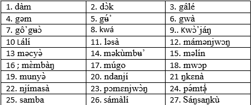
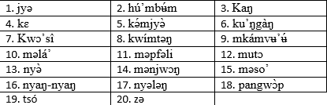
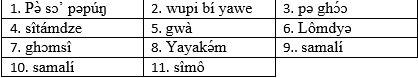
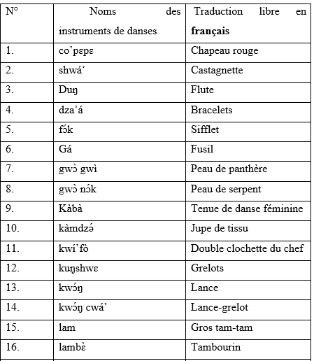
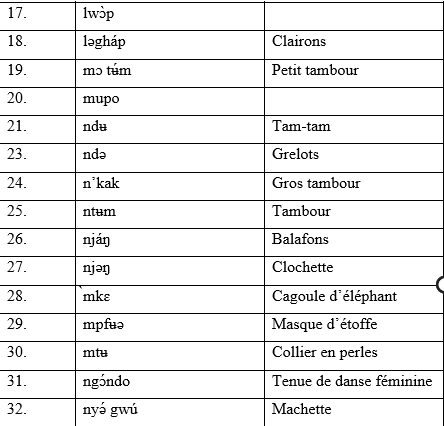
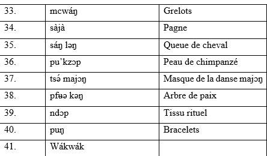

Gaə̌ caʼtə ó loo ! Sɔʼ pəpúŋ nə̂ cwɛ wɛ̂b Ghɔmáláʼ.
Le présent article est une initiative de recherche en linguistique sur la langue ghɔmálá’ notamment dans le domaine de l’onomastique des chants, danses et instruments de musique traditionnels.
Il s’agit d’une recherche destinée à l’apprentissage de la culture et par extension de la langue ghɔmálá’. Il traite des différents noms de danses, chants et instruments de danses traditionnelles qui existent dans les groupements d’expression ghɔmálá. Il met ainsi en exergue la spécificité d’un pan de la culture de ces peuples. Cet article est fortement illustré par des images qui relèvent de la culture grassfields en général et ghɔmálá’ en particulier. Le public cible est davantage constitué des amoureux de la culture qu’ils soient locuteurs ghɔmálá’ de naissance ou pas. Le principal objectif est la vulgarisation de la langue et de la culture ghɔmálá’.
Les chants, danses traditionnelles dans la culture ghɔmálá’ sont des manifestations des évènements de peine ou de joie qui carctérisent les moments de la vie. On peut ainsi distinguer les chansons de joie, de gaité, les chansons funéraires et les chansons rituelles. Plus pariculièrement la berceuse qui est un ensemble de chants qui permettaient de faire dormir les enfants en l’absence immédiate des mères parties pour les travaux champêtres. Ainsi, il existe des chansons avec des rythmes différents en fonction de l’évènement. Chaque chanson a une signification particulière lors des incantations par les maitres de la parole. En général en Afrique, il y a fusion entre danses patrimoniales et chants. Il devient difficile de séparer les chants des danses, même lorsqu’il s’agit des chansons funaires non dansantes. Les battements des mains, les clapettes et les castagnettes sont là pour donner la cadence. Ainsi, Nous listons ci-dessous les principales danses, chants et instruments de danse traditionnelle. Les danses sont reparties en deux grands groupes les danses profanes ou vulgaires et les danses sacrées. Les chants quant à eux sont reparties en chants religieux ( qui abordent un ensemble de chants d’adoration, de louange et de joie) et en chants funéraires. Enfin, nous terminerons avec les instrument de danses traditionnelles qui incluent les outils de musique, les tenues vestimentaires et les masques utilisés lors de l’exécution de ces danses.
Les danses sont reparties en deux grands groupes les danses profanes ou vulgaires et les danses sacrées. Les chants quant à eux sont reparties en chants religieux ( qui abordent un ensemble de chants d’adoration, de louange et de joie) et en chants funéraires. Enfin, nous terminerons avec les instrument de danses traditionnelles qui incluent les outils de musique, les tenues vestimentaires et les masques utilisés lors de l’exécution de ces danses.
Ici nous faisons allusion aux danses populaires vulgaires auxquelles les membres de la population peuvent adhérer sans contraintes. Elles sont généralement pratiquées par des groupes associatifs qui existent dans et hors du village. Elles sont un moyen d’expression des peuples pouvant traduire la solidarité, la réjouissance et la cohésion sociale. En d’autres termes, le groupe associatif qui souhaite exprimer sa fierté ou qui pose un besoin important le fait à travers la danse. Elles sont moins codifiées et surtout elles tolèrent beaucoup plus les erreurs dans leur déroulement que lors des danses dites sacrées. Ainsi nous pouvons distinguer :

Remarque : Ces noms ont été collectés dans plusieurs groupement d’expression ghɔmálá’, ainsi on peut observer parfois qu’une même danse peut avoir des (dé)nominations différentes dans un village comme dans un autre même si les pratiques restent les mêmes. Par exemple, on dira « kaŋ » pour parler du rite initiatique des jeunes à Bapa et « nyaŋ-nyaŋ » à Bafoussam. Mais dans le fond la fonction de ces danses reste les mêmes mais chaque peuple attribue le nom en fonction de ces réalités linguistiques et sociétales.
Ce sont des danses traditionnelles liées aux institutions du village. Pour les pratiquer, il faut faire partie de la chefferie ou alors être un initié c’est-à-dire accepter et répondre aux exigences de la chefferie. Les danses sacrées sont codifiées et les erreurs ne sont pas tolérées par rapport à d’autres danses. Elles se font dans les lieux bien précis qui peuvent être des lieux sacrés. Ce sont ses danses pratiquées dans les cérémonies initiatiques, avec les masques dont le but est de favoriser le contact avec l’invisible. Ainsi, nous pouvons citer :

Remarque : Dans certains cas, les noms des danses secrètes s’apparentent aux noms des confréries secrètes qui sont à l’origine de la danse, ce qui n’est pas toujours exacte. La danse tsó par exemple est une danse de notabilité qui peut être exécutée par plusieurs sociétés secrètes comme un moyen de manifestation de joie, de puissance et de force.
Au départ très liée aux traditions, la chanson traditionnelle accompagne la vie du groupement ghɔmálá’. Elle représente comme la langue, la religion, ainsi que certaines pratiques, l’une des bases importantes de la société traditionnelle. Dans un monde moderne où l’évolution a atteint sa vitesse de croisière, les sources les plus sures et les plus authentiques des chansons traditionnelles ont tendance à disparaitre. Les chants traditionnels ghɔmálá’ abordent des thèmes très variés dans lesquels l’homme, la nature, ainsi que les divinités en constituent les centres principaux d’intérêt. Les principaux sujets étant les berceuses, les divertissements tant infantiles que juvéniles, les complaintes, la séduction, la jalousie, la provocation, la dénonciation, la confession, les épopées, les chants moralisateurs, les chansons funéraires, les chants de louange pour vénérer les grands chefs etc… En bref, la chanson traditionnelle relate les différentes réalités de la vie. Le tableau ci-dessous présente quelques titres de chants que nous avons recensé. Ces noms sont pour la plupart des titres de chansons religieuses qui sont généralement fredonnées lors des cérémonies traditionnelles et d’autres dans certains cas on le même nom que la danse car comme nous l’avons dit ils sont indissociables. Ainsi, nous avons :

Ils ne sont pas très exhaustifs, il sera question dans un prochain article de développer des lexiques incluant les textes entiers de quelques chansons traditionnelles des communautés ghɔmálá’. Dans ce site on pourra retrouver des vidéos avec de champs à l’appui. Ces chants sont distillés par la diversité des instruments et des tenues vestimentaires qui donnent des informations implicites sur le grade qu’occupent les chanteurs au sein de la même communauté.
Les techniques de fabrication des instruments de musique, les tenues vestimentaires permettent de distinguer tel groupe de danse de tel autre. Les instruments varient en fonction des types de danses. Différents instruments de musique en bois, en métal, en ivoire étaient employés dans le cadre des loisirs ou de diverses activités de la vie communautaire des peuples Ghɔmálá’. Un bon nombre d’entre eux, appartenant au fo (chef), aux notables et aux sociétés secrètes, jouaient un rôle liturgique accompagnant ou rythmant les chants et les danses avec processions. Certains de ces objets (tambours, cloches, etc.) revêtant un caractère sacré ont été sanctifiés par des sacrifices et des pratiques magiques. Dans ce cas, les regarder est parfois interdit et dangereux, surtout au moment où ils émettent des sons. Ainsi, on distingue : Le tableau ci-dessus engloble les noms d’instruments de danse dans leur ensemble c’est-à-dire les instruments de musique, certaines tenues vestimentaires utilisées lors des danses.   
Remarque : les instruments de danse sont d’une importance capitale car ils permettent aux artisans de pouvoir gagner leur vie, et rythment les danses qui sont accompagnées des chants. Les tenues traditionnelles des danses apportent des renseignements spécifiques sur le grade que les danseurs occupent au sein de la danse. Dans le kú’gaŋ par exemple, on verra des personnes masquées et d’autres qui ne le sont pas. Tous ces signes représentent un ensemble de codes qui ne sont pas vide de sens. Le port du chapeau également est très réglementée dans cette culture. Le chapeau ne se porte pas n’importe où et n’importe comment. Aujourd’hui avec la modernité les gens portent les chapeaux à tort et à travers, seulement l’ignorance peut parfois être lourde de conséquences. A titre d’illustration, nous avons les tambours « Ntem », « le Nkak » et le « Lam ». Le tambour est ainsi un objet culturel de grande importance. Il sert d’appel à la réunion des mkem (confrérie traditionnelle), le son et les décors évoquant les indicatifs différenciant ces associations. Les images ci-dessous-nous permettrons de nous en faire une idée :